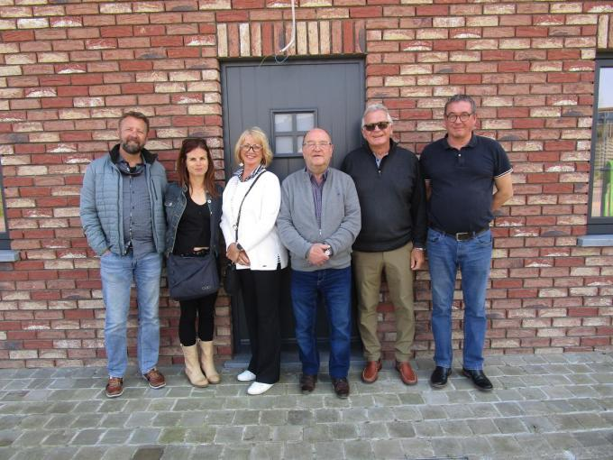

Wie zijn we
De cel WOII is een onafhankelijke vereniging, met de Tweede Wereledoorlog in Groot-Zonnebeke als centraal thema. Alle aspecten met betrekking tot de Tweede Wereldoorlog in de vijf deelgemeenten van Groot-Zonnebeke komen aan bod.
Op historisch en heemkundig vlak willen we graag:
- Foto’s, documenten en allerlei andere informatie verzamelen en ter beschikking stellen aan iedereen die geïnteresseerd is in de materie en/of daar onderzoek wil naar doen. Onderwerpen kunnen zijn: de krijgsverrichtingen in de regio, het leven onder de bezetting, de bevrijding, onderzoek naar familieleden, …
- Op regelmatige basis een publicatie rond de Tweede Wereldoorlog uitbrengen
- Tentoonstellingen organiseren en herdenkingen en andere initiatieven rond WOII ondersteunen
- (Educatieve) uitstappen rond het thema WOII organiseren. Denk hierbij aan een bezoek aan Breendonk of Auschwitz, een nieuwe tentoonstelling in Raversyde, een lezing in het Cegesoma, …
Op educatief vlak willen we graag:
- Thesissen, GIP’s en eindwerken begeleiden en ondersteunen
- Educatieve pakketten en leskoffers ontwikkelen en uitlenen
- Cel WOII: vijftal vrijwilligers, voeren van onderzoek, schrijven publicatie, coördinatie tentoonstelling, uitwerken extra luik en educatieve pakketten, praktische ondersteuning, communicatie met Arolsen Archives en betrokken partners
- De Zonnebeekse Heemvrienden en GBA: ter beschikking stellen van archiefmateriaal, publiciteit
Persberichten
Lees hier de verschillende artikelen gemaakt over ons

Leven met collaborateurs kon niet
Cel WO II zocht informatie over Marcel Collez en diensrol bij de crash van de Amerikaans B17 in 1944. Zijn zoon Jim Collez, die in Canada woont, reageerde op het verzoek en kwam op bezoek in Beselare.
Lees meer...